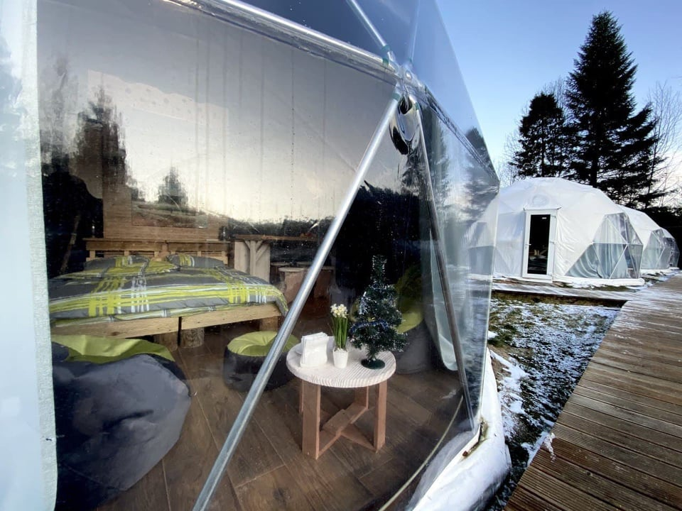
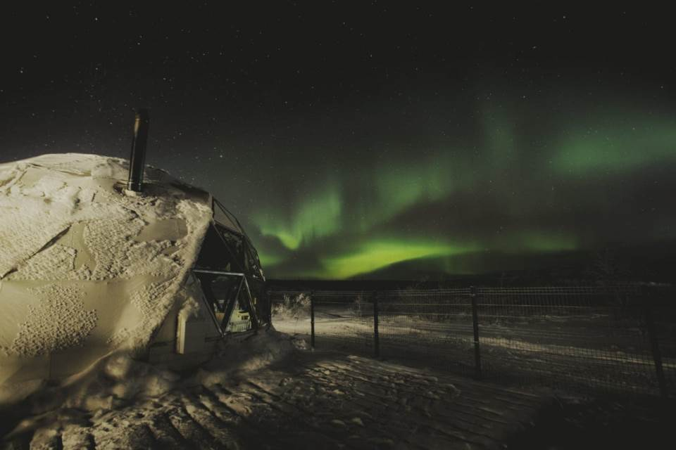
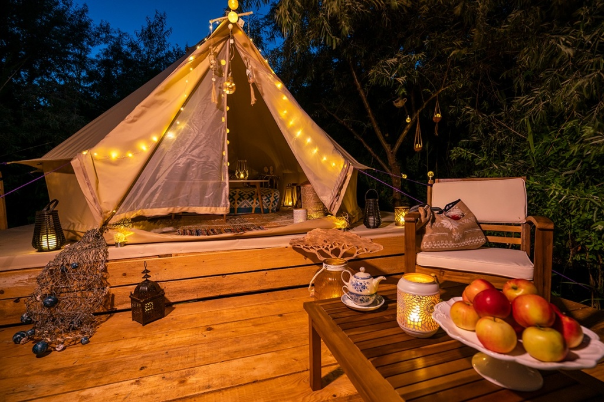

Новое слово глэмпинг
произошло от фразы гламурный кемпинг (glamorous camping). Впервые это
понятие появилось в 2005 году в Великобритании, но активное распространение получило лишь в последние годы.
Причиной этому стала не только возросшая популярность отдыха на природе, но также экономические кризисы и
политическая нестабильность. Все чаще жители городов предпочитают отправляться в путешествия по родным
просторам и держаться подальше от больших скоплений людей. В той же Великобритании бум глэмпинг отелей
пришелся на период после Брексита.
Глэмпинг объединяет два совершенно разных понятия – гламур и кэмпинг. Собственно термин означает отдых на природе со всеми удобствами, включая горячий душ и Интернет. Как направление туризма глэмпинг появился в 2010 году и сразу же завоевал популярность среди городских жителей. Возможность сменить обстановку, избавиться от чувства обыденности и слиться с природой вдохновляет туристов на поездки в самые необычные места, а затраты на такой тур могут быть гораздо выше, чем на путешествие в теплые страны.
Согласно исследованиям Booking.com, средняя стоимость такой поездки в России составляет от 20 000 рублей за неделю пребывания в глэмпинге со всеми удобствами. Клиентами являются не только мужчины, но и женщины, а также семейные пары с детьми. В последнее время пользуется особым спросом услуги предоставления пати-площадок, расположенных у воды для проведения церемоний бракосочетания или празднования торжественных дат.
Каждый из глэмпингов совсем не похож на стандартный номер в отеле. Особенности такого типа размещения – это интересная локация, близость к природе или возможность наблюдения за животными или явлениями природы. В финской Лапландии, например, есть стеклянные иглу, из которых можно увидеть северное сияние.
Во Франции – глэмпинг с прозрачной крышей и картой неба. Гости без препятствий могут наблюдать за звездами в теплой, комфортной и романтичной обстановке. А в африканских странах есть целая сеть глэмпингов, главная особенность которых – возможность подглядывать за дикими животными: жирафами, львами и носорогами
| Наименование | Местоположение | Цена |
| Творческое комьюнити «Деревня» | Московской области | от 2500 рублей |
| Eco Village Sochi | городской округ Сочи | от 2500 рублей |
| Дикая собака динго | Казань | от 2500 рублей |
| Polyana Glamping | Калининградская область | от 6900 рублей |
| Хюгге Кэмп | Лахденпохский район | от 4000 рублей |